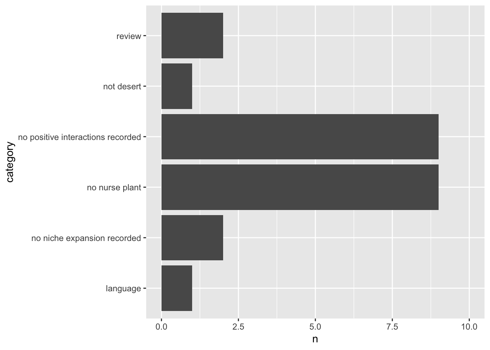

Now the fun and your real training as a synthesis jedi begins (hello to 10,000 hours for mastery). Search your returned hits for appropriate studies that satisfy the criteria that you list a priori. Typically, there are a set of simple assumptions for exclusion criteria for a meta-analysis in evidence-based research. Not a review, includes terms and actually studied the process at hand, and not a duplicate. Those are the three most common reasons for exclusion for the first round of exclusion. The second round shifts from abstract/overview review and sorting of studies to detailed evidence extraction. Within this round, the most common reason for exclusion is lack of open data.
The key element to summarize for reproducible science is the criteria. The most typical mechanism to capture the sort workflow is a PRISMA (Preferred Reporting Items for Systematic Reviews and Meta-Analyses) statement/report, and some disciplines have not been as rapid in adopting this synthesis summary tool. A nice description of its importance here.
A search for research on positive interactions and the niche in deserts.
We will continue with the study of niche within desert ecosystems instance and search matrix.
library(tidyverse)
library(PRISMAstatement)
#PRISMA####
#use 'prisma' function from PRISMAstatement
#https://cran.r-project.org/web/packages/PRISMAstatement/vignettes/PRISMA.html
prisma.report <-read_csv("data/prisma.csv")
prisma.report## # A tibble: 53 x 4
## ID inclusion category detailed.reason
## <dbl> <chr> <chr> <chr>
## 1 1 N no positive inter… Niche partioning tested in differen…
## 2 2 Y include Niche of shrub species with conserv…
## 3 3 Y include Niche modelling (sdm) of shrub spec…
## 4 4 N no niche expansio… Dietary niches of two ungulates eva…
## 5 5 Y include Hydrological niche with negative ef…
## 6 6 N no positive inter… SDMs for a rare cactus with conserv…
## 7 7 N no positive inter… Phylogenetic niche evaluated for Mo…
## 8 8 N no positive inter… Niche expansion reported via facili…
## 9 9 Y include Facilitation favours a species a ea…
## 10 10 Y include Shade conditions determined germina…
## # ... with 43 more rowsexclusions <- prisma.report %>% filter(inclusion == "N") %>% select(ID, category)
dim(exclusions)## [1] 24 2prisma(found = 156,
found_other = 0,
no_dupes = 53,
screened = 53,
screen_exclusions = 0,
full_text = 53,
full_text_exclusions = 24,
qualitative = 29,
quantitative = 29,
width = 600, height = 600)#Summary of exclusions
categories <- exclusions %>% group_by(category) %>% tally() %>% arrange(desc(n))
categories## # A tibble: 6 x 2
## category n
## <chr> <int>
## 1 no nurse plant 9
## 2 no positive interactions recorded 9
## 3 no niche expansion recorded 2
## 4 review 2
## 5 language 1
## 6 not desert 1ggplot(categories, aes(category, n)) + geom_bar(stat = "identity") + coord_flip() + ylim(0,10)
Use your previous search and select a reasonable set of studies to explore the importance of general versus specific exclusion criteria on processing primary research literature as a synthesis substrate. As an important consideration here, please also try the second round, even briefly, for those not immediately excluded by adding another vector in your dataframe indicating whether useable data are available/provided within the publication. For the purposes of this sort step, the data can be a list, table, or even figure that shows means, variances, and sample sizes for every treatment level needed in the synthesis.
Even if you never want to engage in these forms of synthesis, ensure you primary research publications are available to others by embracing the principles of open science and effective scientific reporting.
A step-by-step guide to the meta versus systematic review decision.
The PRISMA flow diagram is required by many journals when submitting a systematic review or meta-analysis. However, several journals including PLOS ONE and PeerJ also require the PRISMA Checklist (available for donload from site) as a supplemental file.